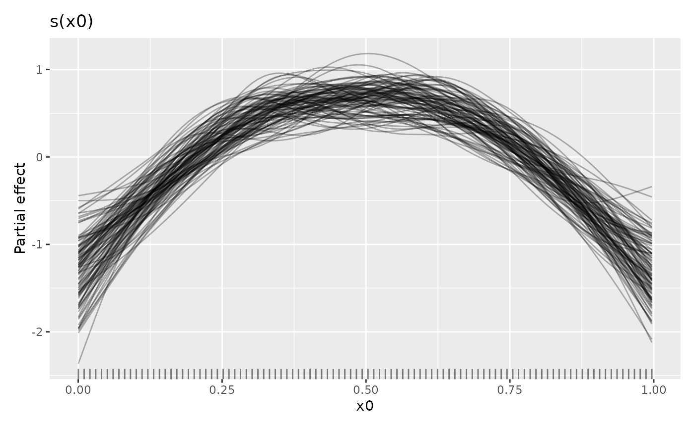
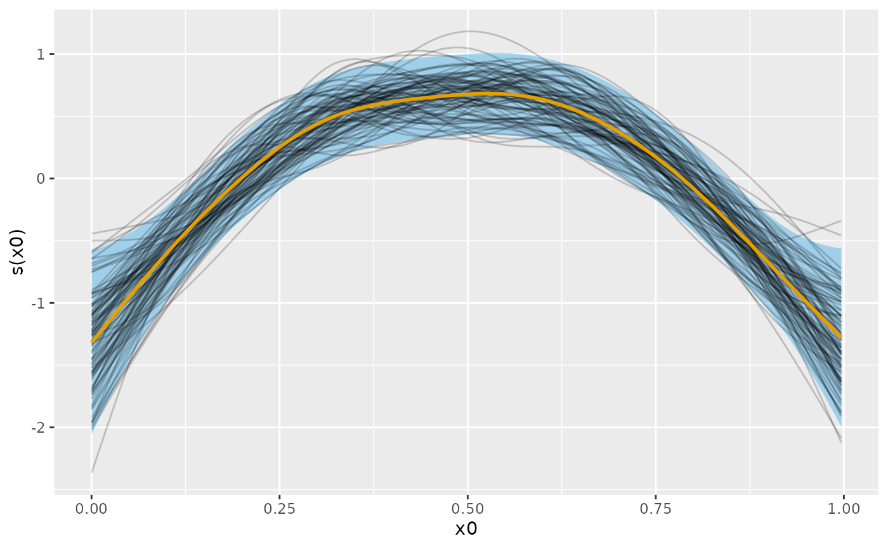
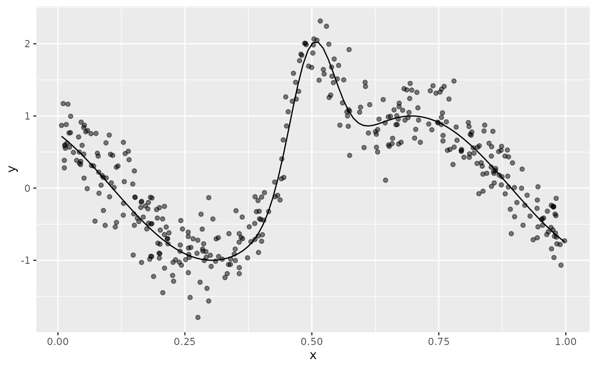
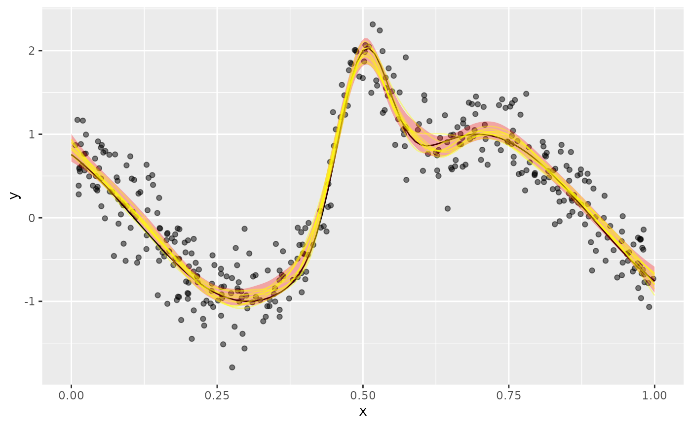
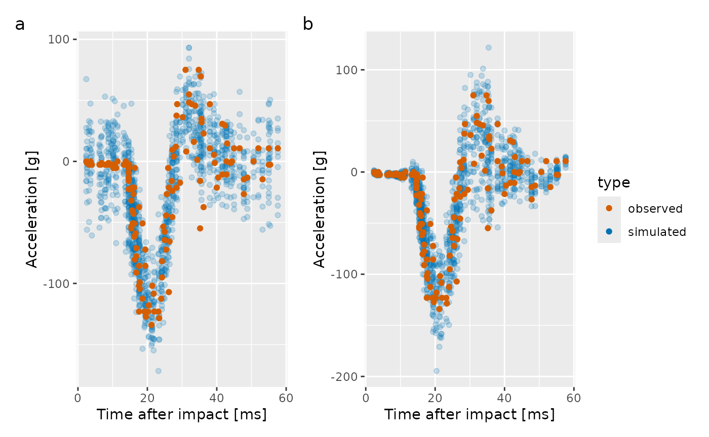
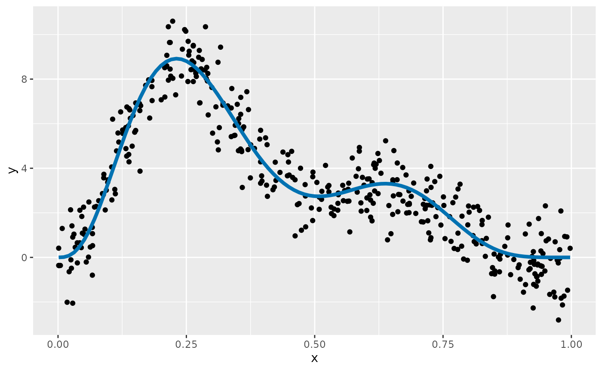
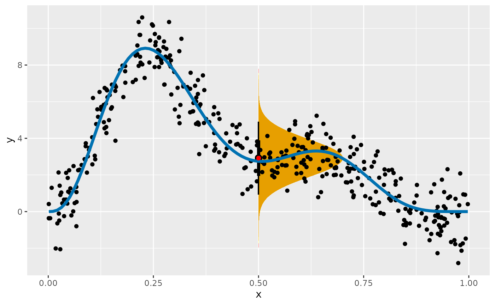
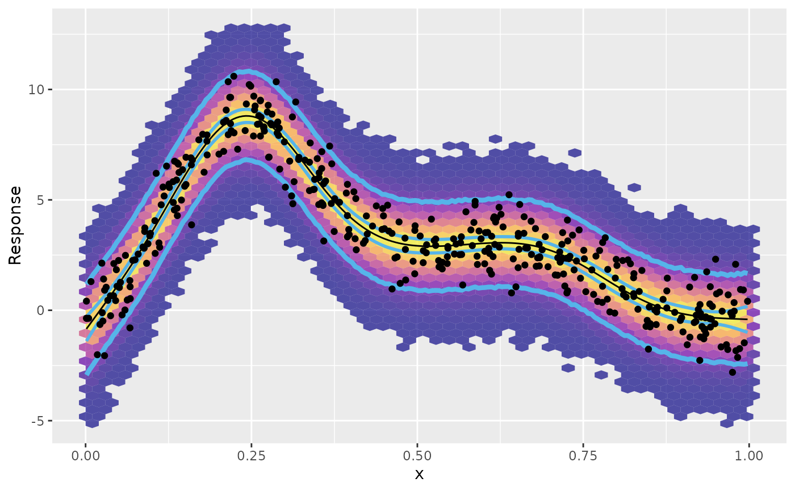
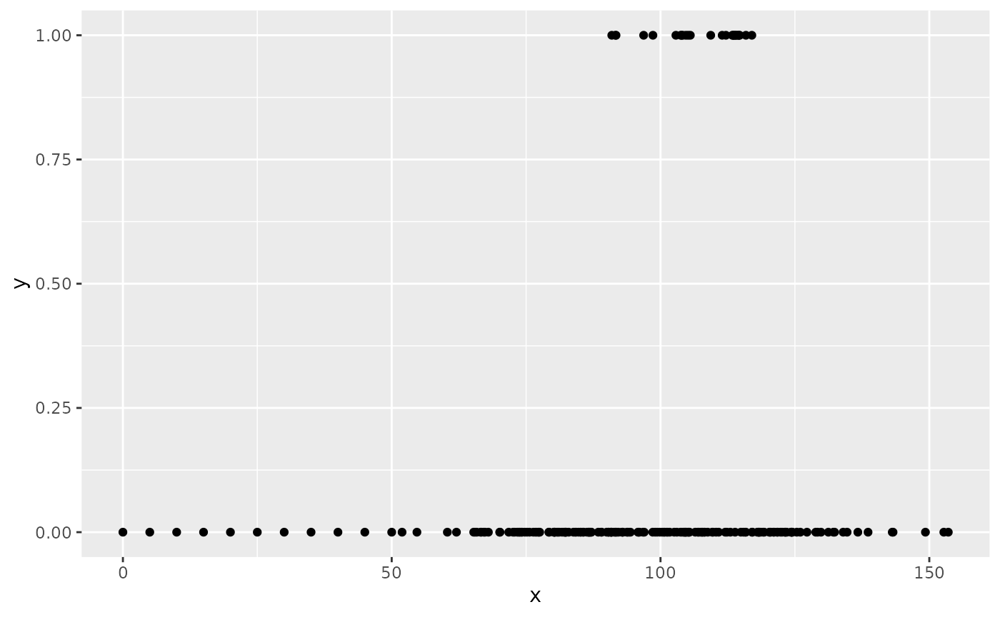
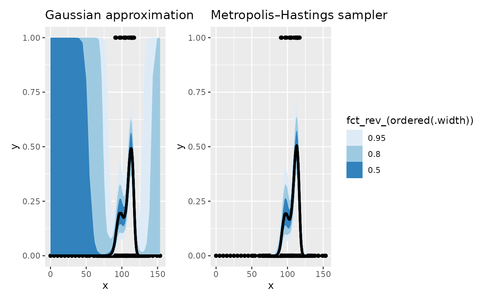

Posterior simulation of GAM smooths, fitted values and responses
Source:vignettes/articles/posterior-simulation.Rmd
posterior-simulation.RmdPosterior simulation represents uncertainty in a fitted GAM by drawing model coefficients and evaluating smooths or predictions at each draw. It can also generate possible new responses, combining coefficient uncertainty with variation between observations. This article shows how to choose the sampled quantity, plot the resulting curves, and construct prediction intervals.
Load the packages for fitting models, drawing samples and plotting the results.
library("mgcv")
library("gratia")
library("dplyr")
library("tidyr")
library("ggplot2")
library("ggdist")
library("distributional")
library("tibble")
library("withr")
library("patchwork")For a generalized additive model (GAM) with a single linear predictor for the mean, we can write the model as
g(\mu_i) = \eta_i = A_i + \mathbf{X}_i \boldsymbol{\gamma} + \sum_{j=1}^{J} f_j(x_{ij}), \; y_i \sim \mathcal{D}(\mu_i, \phi)
Here g is the link function, A_i is an offset, and \mathbf{X}_i\boldsymbol{\gamma} contains the parametric terms. Each f_j is a smooth function of covariate x_j. The response distribution \mathcal{D} has mean \mu_i and may have a scale parameter \phi.
Each smooth is a weighted sum of known basis functions:
f_j(x_{ij}) = \sum_{k=1}^{K_j} \beta_{jk} b_{jk}(x_{ij}).
The coefficients \beta_{jk} determine the shape of the fitted function. The penalty \sum_j \lambda_j \boldsymbol{\beta}^{\mathsf{T}}\mathbf{S}_j \boldsymbol{\beta} discourages excessive wiggliness, with smoothing parameters \lambda_j controlling its strength.
After fitting the GAM with {mgcv}, we obtain a vector of coefficient estimates \hat{\boldsymbol{\beta}} that includes the parametric coefficients and the coefficients of all the smooths. Under the Bayesian view of smoothing (Miller, 2025), we can approximate their posterior as
\boldsymbol{\beta} \mid \mathbf{y}, \mathbf{B}, \hat{\boldsymbol{\lambda}}, \hat{\phi} \;\overset{\mathrm{approx}}{\sim}\; \mathrm{MVN}(\hat{\boldsymbol{\beta}}, \mathbf{V}_{\mathrm{b}}).
Here \mathbf{y} is the observed response vector and \mathbf{B} is the full model matrix, including the parametric terms and spline bases. The smoothing parameters \hat{\boldsymbol{\lambda}} and, where estimated, the response scale \hat{\phi} are held at their fitted values. \mathbf{V}_{\mathrm{b}} is the model’s Bayesian coefficient covariance matrix. Its off-diagonal entries describe which coefficients tend to vary together in the posterior draws.
For a Gaussian identity-link GAM with the usual quadratic smoothing penalty, the coefficient posterior is exactly multivariate normal when the response variance \sigma^2 = \phi and smoothing parameters are held fixed, provided the posterior is proper and the coefficients are free of inequality constraints. For other distributions or links, normality is generally an approximation. The Metropolis–Hastings example below shows a case where that approximation performs poorly.
What are we simulating?
Choose a function according to the quantity whose variation you want to see:
| Function | What varies between draws? |
|---|---|
smooth_samples() |
An individual smooth contribution, evaluated using its coefficients from each joint coefficient draw |
fitted_samples() |
Distribution parameters, or the expected response with
quantity = "expectation", evaluated using each joint
coefficient draw |
predicted_samples() |
New observations generated with coefficients held at their fitted values |
posterior_samples() |
New observations generated after drawing coefficients, combining coefficient uncertainty and response variation |
For example, uncertainty in a mean curve and variation between future
observations answer different questions. Use
fitted_samples() with quantity = "expectation"
for the former, and posterior_samples() for the latter when
coefficient uncertainty should also be included.
By default, coefficient draws use \mathbf{V}_{\mathrm{b}}, holding the selected
smoothing parameters fixed. For many mgcv models fitted with REML or ML,
a corrected covariance matrix \mathbf{V}_{\mathrm{c}} is also available.
Setting unconditional = TRUE uses this correction to
approximately account for smoothing-parameter uncertainty. It does not
draw smoothing parameters or a dispersion estimate stored outside the
coefficient vector. Scale parameters represented by coefficients, as in
gaulss(), vary with those coefficient draws.
{gratia} also supplies simulate() methods for
gam(), bam(), gamm() and {scam}
fits. For the univariate examples here, each column contains one
simulated response dataset, with rows corresponding to observations.
derivative_samples() evaluates rates of change using the
same coefficient draws at neighbouring covariate values. See Comparing treatments and estimating
rates of change for examples of response derivatives.
Sample and plot individual smooth contributions
For a selected smooth f_j, we retain
its coefficients \boldsymbol{\beta}_j^{\ast} from each joint
coefficient draw and evaluate \mathbf{f}_j^{\ast} =
\mathbf{B}_j\boldsymbol{\beta}_j^{\ast}, where \mathbf{B}_j contains the smooth’s basis
functions at the requested covariate values. Under the Gaussian
approximation, the marginal distribution of these coefficients is \mathrm{MVN}(\hat{\boldsymbol{\beta}}_j,
\mathbf{V}_{\mathrm{b},jj}), where \mathbf{V}_{\mathrm{b},jj} is their block of
the full covariance matrix. smooth_samples() uses the same
joint coefficient draws for all selected smooths, preserving dependence
between their sampled contributions.
To illustrate smooth uncertainty, we simulate independent covariates
x0 to x3 uniformly on the unit interval. The
response combines nonlinear effects of x0, x1
and x2 with independent Gaussian noise of standard
deviation two; x3 has no effect. This is Gu & Wahba’s
example, available through data_sim().
ss_df <- data_sim("eg1", seed = 42)We fit a GAM with a smooth for each covariate, selecting smoothing parameters by REML.
The contribution of f(x_0) uses coefficients 2 through 10 of this model. The other coefficients are not included when evaluating this smooth contribution.
s_x0 <- get_smooth(m_ss, "s(x0)")
smooth_coef_indices(s_x0)
#> [1] 2 3 4 5 6 7 8 9 10We use select to sample the contribution of
s(x0) on 100 specified values of x0. Omitting
select would sample all smooths in the model.
sm_grid <- data_slice(m_ss, x0 = evenly(x0, n = 100))
sm_samp <- smooth_samples(m_ss, select = "s(x0)", data = sm_grid,
n_draws = 100, seed = 21)Here we supply 100 evenly spaced values of x0 through
data so that we can reuse exactly the same grid for the
interval below. Without data, n_grid controls
the number of covariate evaluation points constructed by
smooth_samples(). n_draws controls the number
of coefficient draws and hence sampled smooths; here we request 100.
Plotting the sampled curves with draw() shows how the
shape varies between coefficient draws:

Setn_samples in draw() to display a randomly
selected subset of curves. Its seed argument makes the
selection repeatable.
We now compare the sampled contribution of s(x0) with
its pointwise 95% credible interval on the same grid.
smooth_samples() draws only the selected smooth
contribution. We therefore set overall_uncertainty = FALSE
in smooth_estimates() to omit overall-mean uncertainty from
the interval too.
# evaluate the fitted smooth over x0 and add on a credible interval
sm_est <- smooth_estimates(m_ss, select = "s(x0)", data = sm_grid,
overall_uncertainty = FALSE) |>
add_confint()
# plot the smooth, credible interval, and posterior smooths
sm_est |>
ggplot(aes(x = x0)) +
geom_lineribbon(aes(ymin = .lower_ci, ymax = .upper_ci),
orientation = "vertical", fill = "#56B4E9", alpha = 0.5
) +
geom_line(
data = sm_samp,
aes(y = .value, group = .draw), alpha = 0.2
) +
geom_line(aes(y = .estimate), linewidth = 1, colour = "#E69F00") +
labs(y = smooth_label(s_x0))
At a fixed value of x_0, the blue interval has approximately 95% posterior probability for the smooth contribution, conditional on the observed data, model design and fitted smoothing and variance parameters. With many posterior draws, about 95% of the sampled values at that particular x_0 would fall inside it. This does not mean that 95% of complete sampled curves stay inside the interval over the whole grid.
Marra & Wood (2012) study frequentist coverage averaged over the function. Imagine repeatedly generating data from the same true function, refitting the GAM and constructing intervals. For each fit, record the proportion of covariate values at which the interval contains the true function. The average of those proportions estimates the coverage studied in the paper. It can be close to the nominal level when smoothing bias is small. For nearly linear smooths, the coverage of centred components can be poor and can improve if the interval includes uncertainty in the overall mean. The intervals here exclude that uncertainty to match the sampled smooth contribution.
Sample expected responses with fitted_samples()
In this section we request quantity = "expectation"
explicitly. For an ordinary mean-based GAM, these are draws of the same
expected response estimated by
predict(..., type = "response"). Distributional models can
have several predictors, and their first parameter need not be the
expected response. The default quantity = "parameters"
returns those parameters instead; family_parameters()
describes their meanings.
The next example uses a mean function with a narrow peak superimposed on a sine wave, from example 6 of Luo & Wahba (1997):
\sin(2(4x - 2)) + 2\exp(-256(x - 0.5)^2).
We sample x on the unit interval and add independent
Gaussian noise with standard deviation 0.3. Plotting the generating
function with the observations shows the local change in shape that the
model needs to capture.
f <- function(x) {
sin(2 * ((4 * x) - 2)) + (2 * exp(-256 * (x - 0.5)^2))
}
df <- data_sim("lwf6", dist = "normal", scale = 0.3, seed = 2)
plt <- df |>
ggplot(aes(x = x, y = y)) +
geom_point(alpha = 0.5) +
geom_function(fun = f)
plt
An adaptive smooth allows the strength of smoothing to vary over
x, helping it represent both the narrow peak and the
broader sine-wave pattern:
We create 200 prediction points between zero and one, adding
.row to match each point with its sampled values later:
new_df <- data_slice(m, x = evenly(x, lower = 0, upper = 1, n = 200)) |>
mutate(.row = row_number())First, fitted_values() gives the estimated mean and
credible interval at each prediction point:
fv <- fitted_values(m, quantity = "expectation", data = new_df)We then draw ten mean curves with fitted_samples() and
join their prediction coordinates. Every curve uses one joint
coefficient draw:
fs <- fitted_samples(m, quantity = "expectation", data = new_df, n_draws = 10, seed = 4) |>
left_join(new_df |> select(.row, x), by = join_by(.row == .row))To compare the sampled curves with the pointwise credible interval, add them to the data plot. The ribbon shows uncertainty in the mean response, and the yellow lines show the ten sampled means:
plt +
geom_ribbon(data = fv, aes(y = .fitted, ymin = .lower_ci, ymax = .upper_ci),
fill = "red", alpha = 0.3) +
geom_line(data = fs, aes(group = .draw, x = x, y = .fitted),
colour = "yellow", alpha = 0.4)
Here the expected-response draws include the intercept and its
uncertainty. The earlier smooth_samples() example isolated
a centred smooth contribution.
Simulate responses when both mean and variability change
Some models have separate predictors for distribution parameters such
as the mean and standard deviation. predicted_samples() and
posterior_samples() support these models when their fitted
family supplies a response generator. We adapt Matteo Fasiolo’s {mgcViz}
example using the mcycle data from {MASS}, which record
acceleration at times after impact in simulated motorcycle
accidents.
Load the observations and add .row so simulated
responses can be matched to their measurement times:
data(mcycle, package = "MASS")
mcycle <- mcycle |>
mutate(
.row = row_number()
) |>
relocate(.row, .before = 1L)To these data we fit a standard Gaussian GAM for the conditional mean
of accel.
We generate ten responses at each observed time with
predicted_samples(). The code joins the measurement times,
combines simulations with observations, and adds labels and transparency
values for the comparison plot:
n_sim <- 10
n_data <- nrow(mcycle)
sim_gau <- predicted_samples(m_gau, n_draws = n_sim, seed = 10) |>
left_join(mcycle |> select(-accel), # join on the observed data for times
by = ".row"
) |>
rename(accel = .response) |> # rename
bind_rows(mcycle |>
relocate(.after = last_col())) |> # bind on observer data
mutate( # add indicator: simulated or observed
type = rep(c("simulated", "observed"),
times = c(n_sim * n_data, n_data)
),
.alpha = rep( # set alpha values for sims & observed
c(0.2, 1), times = c(n_sim * n_data, n_data)
)
)We prepare a plot with observed points opaque and simulated points transparent, so the spread of the simulations can be compared with the observations:
plt_labs <- labs(
x = "Time after impact [ms]",
y = "Acceleration [g]"
)
plt_gau <- sim_gau |>
ggplot(aes(x = times)) +
geom_point(aes(y = accel, colour = type, alpha = .alpha)) +
plt_labs +
scale_colour_manual(values = gratia_palette()(9)[c(6, 5)]) +
scale_alpha_identity()This plot appears on the left of the comparison below. The constant-variance model produces similar residual spread at every time, whereas the observations suggest that spread changes after impact.
We now fit gaulss(), with separate smooths for the mean
and scale parameter. This allows the conditional variance to change with
time as well:
m_gaulss <- gam(
list(accel ~ s(times, k = 20, bs = "tp"),
~ s(times, bs = "tp")
), data = mcycle, family = gaulss()
)Generate responses from this model at the same measurement times and prepare the same labels for plotting:
sim_gaulss <- predicted_samples(m_gaulss, n_draws = n_sim, seed = 20) |>
left_join(mcycle |> select(-accel),
by = ".row"
) |>
rename(accel = .response) |>
bind_rows(mcycle |> relocate(.after = last_col())) |>
mutate(
type = rep(c("simulated", "observed"),
times = c(n_sim * n_data, n_data)
),
.alpha = rep(c(0.2, 1), times = c(n_sim * n_data, n_data))
)We reuse the earlier plot with the new simulations and place both models side by side to compare how well they reproduce the observed spread:
plt_gaulss <- plt_gau + sim_gaulss
plt_gau + plt_gaulss +
plot_annotation(tag_levels = "a") +
plot_layout(guides = "collect", ncol = 2)
The model on the right can reproduce the changing spread more
closely. This comparison concerns response variation at the fitted
parameter values: predicted_samples() holds coefficients
fixed in both panels.
Construct prediction intervals for new observations
A prediction interval describes plausible values of a new observation. To construct one, we combine uncertainty in the estimated mean with response variation around that mean. For a Gaussian model, these come from coefficient uncertainty and the Gaussian error distribution, respectively.
We illustrate the calculation using 400 observations. The mean
follows Gu & Wahba’s curved function f_2, evaluated at independent uniform
x values between zero and one. Independent Gaussian errors
have variance \sigma^2 = 1.
df <- data_sim("gwf2", n = 400, scale = 1, dist = "normal", seed = 8)Plot the observations against the generating mean curve to see their spread:
df |>
ggplot(aes(x = x, y = y)) +
geom_point() +
geom_function(fun = gw_f2, colour = "#0072B2", linewidth = 1.5)
We estimate that mean curve with a single smooth of x,
selecting its smoothness by REML:
Use predict() to estimate the mean response at a new
covariate value, x = 0.5.
mu <- predict(m, newdata = data.frame(x = 0.5))
mu
#> 1
#> 2.919094This fitted value is the mean of the response distribution at
x = 0.5. To describe its spread, take the square root of
the fitted Gaussian scale parameter, which estimates the residual
variance. This gives the standard deviation required by
dist_normal() below:
sigma <- sqrt(m$scale)
sigma
#> [1] 1.009666We use {ggdist} to draw the fitted response density at
x = 0.5, alongside the data and generating mean curve:
df |>
ggplot(aes(x = x, y = y)) +
stat_halfeye(aes(ydist = dist_normal(mean = mu, sd = sigma)),
x = 0.5, scale = 0.2, slab_fill = "#E69F00", slab_alpha = 0.7
) +
geom_point() +
geom_function(fun = gw_f2, colour = "#0072B2", linewidth = 1.5) +
geom_point(x = 0.5, y = mu, colour = "red")
The orange region shows the fitted response distribution at
x = 0.5, with the mean and variance fixed at their
estimates. Use fitted_values() to see how uncertain the
mean itself is at that value of x.
fitted_values(m, quantity = "expectation", data = data.frame(x = 0.5))
#> # A tibble: 1 × 7
#> .row x .parameter .fitted .se .lower_ci .upper_ci
#> <int> <dbl> <chr> <dbl> <dbl> <dbl> <dbl>
#> 1 1 0.5 expectation 2.92 0.161 2.60 3.23The .se column gives the standard error of the estimated
mean in .fitted. .lower_ci and
.upper_ci give its 95% credible interval. The fitted
response variance \phi = \sigma^2 is
held fixed in these calculations.
We next extend the calculation over the observed range of
x, combining mean uncertainty with response variation using
posterior_samples(). Start with 200 evenly spaced
prediction points:
ds <- data_slice(m, x = evenly(x, n = 200)) |>
mutate(.row = row_number())The .row column matches simulated responses to the rows
in ds. We compute fitted means and credible intervals at
the same covariate values. We set unconditional = TRUE here
and in posterior_samples() below so both use the same
covariance correction for uncertainty in the smoothing parameter.
fv <- fitted_values(m, quantity = "expectation", data = ds, unconditional = TRUE)We will plot these mean intervals alongside the prediction intervals, making the additional variation between observations visible.
Use posterior_samples() to generate new responses at
each prediction point. Join by .row to recover the
corresponding x values for plotting.
ps <- posterior_samples(m, n_draws = 10000, data = ds, seed = 24,
unconditional = TRUE) |>
left_join(ds, by = join_by(.row == .row))
ps
#> # A tibble: 2,000,000 × 4
#> .row .draw .response x
#> <int> <int> <dbl> <dbl>
#> 1 1 1 -0.589 0.00129
#> 2 2 1 -0.483 0.00629
#> 3 3 1 -1.27 0.0113
#> 4 4 1 0.399 0.0163
#> 5 5 1 0.0368 0.0213
#> 6 6 1 0.443 0.0263
#> 7 7 1 -0.249 0.0313
#> 8 8 1 -0.406 0.0363
#> 9 9 1 0.683 0.0413
#> 10 10 1 -0.417 0.0463
#> # ℹ 1,999,990 more rowsWe request 10,000 response draws at each prediction point. The
unconditional = TRUE covariance correction approximately
includes uncertainty in the estimated smoothing parameter. The fitted
response variance remains fixed. Increasing n_draws reduces
Monte Carlo variation in the estimated interval endpoints; check their
stability when an analysis depends on a limit.
ps has n_draws * nrow(ds) rows. Each
.draw identifies a simulated set of responses, one per
prediction point. To form an interval at each x, we group
the responses by .row using {dplyr} and calculate their
quantiles. Wrap quantile() in a function that returns the
probabilities and their quantiles as columns so they can be used with
reframe().
quantile_fun <- function(x, probs = c(0.025, 0.5, 0.975), ...) {
tibble::tibble(
.value = quantile(x, probs = probs, ...),
.q = probs * 100
)
}We apply this function to the simulated responses, grouping by
.row to summarise the posterior predictive distribution
separately at each new value of x. reframe()
applies quantile_fun() within each group. We then pivot the
summary from long to wide format and join the covariate values using
.row.
p_int <- ps |>
group_by(.row) |>
reframe(quantile_fun(.response)) |>
pivot_wider(
id_cols = .row, names_from = .q, values_from = .value,
names_prefix = ".q"
) |>
left_join(ds, by = join_by(.row == .row))
p_int
#> # A tibble: 200 × 5
#> .row .q2.5 .q50 .q97.5 x
#> <int> <dbl> <dbl> <dbl> <dbl>
#> 1 1 -2.93 -0.859 1.17 0.00129
#> 2 2 -2.68 -0.644 1.38 0.00629
#> 3 3 -2.47 -0.414 1.62 0.0113
#> 4 4 -2.24 -0.236 1.80 0.0163
#> 5 5 -2.03 -0.0245 2.02 0.0213
#> 6 6 -1.83 0.195 2.20 0.0263
#> 7 7 -1.58 0.376 2.41 0.0313
#> 8 8 -1.43 0.601 2.60 0.0363
#> 9 9 -1.16 0.843 2.80 0.0413
#> 10 10 -0.975 1.04 3.05 0.0463
#> # ℹ 190 more rowsThe printed tibble shows the 95% pointwise prediction interval for
the first 10 rows of ds. .q50 is the median of
the posterior predictive distribution at each value of
x.
We plot the fitted mean, its credible interval and the prediction interval together. Black points show observations. Hexagonal bins summarise the two million simulated responses without drawing each point separately:
fv |>
ggplot(aes(x = x, y = .fitted)) +
# summarise the posterior samples
geom_hex(
data = ps, aes(x = x, y = .response, fill = after_stat(count)),
bins = 50, alpha = 0.7
) +
# add the lower and upper prediction intervals
geom_line(data = p_int, aes(y = .q2.5), colour = "#56B4E9",
linewidth = 1.5) +
geom_line(data = p_int, aes(y = .q97.5), colour = "#56B4E9",
linewidth = 1.5) +
# add the lower and upper credible intervals
geom_line(aes(y = .lower_ci), colour = "#56B4E9", linewidth = 1) +
geom_line(aes(y = .upper_ci), colour = "#56B4E9", linewidth = 1) +
# add the fitted model
geom_line() +
# add the observed data
geom_point(data = df, aes(x = x, y = y)) +
scale_fill_viridis_c(option = "plasma") +
theme(legend.position = "none") +
labs(y = "Response")
The outer pair of blue lines shows the 95% pointwise posterior
predictive interval for a new response at each value of x.
It combines coefficient uncertainty with response variation, while
holding the response variance at its fitted value. The inner pair shows
uncertainty in the fitted mean alone. The hexagonal bins summarise the
simulated responses, with warmer colours indicating larger counts.
Compare Gaussian draws with Metropolis–Hastings sampling
The Gaussian approximation can be poor when the coefficient posterior
is strongly asymmetric. Simon Wood’s mgcv::gam.mh() example
illustrates this with binary data containing long stretches of zero
responses. A Metropolis–Hastings (MH) sampler evaluates the conditional
posterior directly through the penalised likelihood, while holding
smoothing and other fitted family parameters fixed.
We adapt that example below. The function keeps a fixed sequence of binary responses and generates unevenly distributed covariate values; it does not simulate responses from a known probability curve. This lets us compare two sampling methods for the same sparse response pattern.
ga_fail <- function(seed) {
df <- tibble(y = c(
rep(0, 89), 1, 0, 1, 0, 0, 1, rep(0, 13), 1, 0, 0, 1,
rep(0, 10), 1, 0, 0, 1, 1, 0, 1, rep(0, 4), 1, rep(0, 3),
1, rep(0, 3), 1, rep(0, 10), 1, rep(0, 4), 1, 0, 1, 0, 0,
rep(1, 4), 0, rep(1, 5), rep(0, 4), 1, 1, rep(0, 46)
)) |>
mutate(
x = withr::with_seed(
seed,
sort(c(0:10 * 5, rnorm(length(y) - 11) * 20 + 100))
),
.row = row_number()
) |>
relocate(.row, .before = 1L)
df
}Generate the covariate values and plot the resulting response pattern:
df <- ga_fail(3)
df |>
ggplot(aes(x = x, y = y)) +
geom_point()
Successes occur in a limited part of the covariate range; many other
values of x have only failures. We fit a binomial GAM with
a logit link to estimate the response probability across this range.
Draw expected response probabilities first using the Gaussian approximation, then using MH sampling, so both results can be summarised on the same scale:
fs_ga <- fitted_samples(m_logit, quantity = "expectation", n_draws = 2000, seed = 2)
fs_mh <- fitted_samples(m_logit, quantity = "expectation",
n_draws = 2000, seed = 2, method = "mh", thin = 2,
rw_scale = 0.4
)With method = "mh", thin = 2 retains every
second iteration after burn-in. rw_scale = 0.4 multiplies
the approximate posterior covariance by 0.4 for the Gaussian random-walk
proposals. The default burnin = 1000 discards the first
1,000 iterations. t_df = 40 sets the degrees of freedom for
the independent multivariate t proposals.
mgcv::gam.mh() alternates those t proposals,
centred on the fitted coefficients, with Gaussian random-walk proposals.
Each proposed draw is accepted or rejected using the conditional
posterior density. Consequently, the distribution of retained chain
states can differ from the Gaussian approximation. Rejected proposals
leave repeated states in the chain.
Summarise each set of probability draws into 50%, 80% and 95%
intervals with ggdist::median_qi(), then join the covariate
values for plotting:
excl_col <- c(".draw", ".parameter", ".row")
int_ga <- fs_ga |>
group_by(.row) |>
median_qi(.width = c(0.5, 0.8, 0.95), .exclude = excl_col) |>
left_join(df, by = join_by(.row == .row))
int_mh <- fs_mh |>
group_by(.row) |>
median_qi(.width = c(0.5, 0.8, 0.95), .exclude = excl_col) |>
left_join(df, by = join_by(.row == .row))We place the Gaussian and MH intervals side by side, using the same observed points and probability scale in each panel:
plt_ga <- df |>
ggplot(aes(x = x, y = y)) +
geom_point() +
geom_lineribbon(
data = int_ga,
aes(x = x, y = .fitted, ymin = .lower, ymax = .upper)
) +
scale_fill_brewer() +
labs(title = "Gaussian approximation")
plt_mh <- df |>
ggplot(aes(x = x, y = y)) +
geom_point() +
geom_lineribbon(
data = int_mh,
aes(x = x, y = .fitted, ymin = .lower, ymax = .upper)
) +
scale_fill_brewer() +
labs(title = "Metropolis–Hastings sampler")
plt_ga + plt_mh + plot_layout(guides = "collect")
The Gaussian approximation gives much wider probability intervals in parts of the range containing only zero responses. The MH intervals concentrate closer to zero there. This difference shows that the choice of coefficient sampler can matter for the resulting response intervals. Before using the MH limits in an analysis, check several chains using the workflow below: this single-chain illustration does not assess mixing or interval coverage.
Multiple chains and sampling diagnostics
Several chains let us check whether separate sampling sequences
explore the same coefficient distribution. n_draws is the
total number of retained coefficient draws across chains. Four chains
with n_draws = 1000 retain 250 draws each. Each MH chain
has its own burn-in period. Use n_cores to run chains
concurrently with {mirai}. gratia reuses an active mirai pool; if none
is available, it creates and removes a temporary pool. The following
call requests posterior responses and diagnostics from four coefficient
chains:
response_draws <- posterior_samples(
m_ss, n_draws = 1000, chains = 4, n_cores = 4,
method = "mh", burnin = 1000, seed = 281,
diagnostics = TRUE
)
sampling_diagnostics(response_draws)The returned table includes .chain and
.iteration. .draw identifies a draw across all
chains. diagnostics = TRUE requires the {posterior} package
and attaches coefficient summaries, including R-hat, bulk and tail
effective sample sizes, and Monte Carlo standard errors. The effective
sample sizes measure how much information remains after allowing for
correlation between successive draws. A total of 1,000 retained draws
need not provide the information of 1,000 independent draws. R-hat
compares variation within and between chains; it should be close to one
when the chains explore the same distribution. Monte Carlo standard
errors describe uncertainty from using a finite number of draws.
These summaries describe the coefficient chains before response simulation. Response noise can conceal poor mixing of the coefficient chains. To examine coefficient trace plots and then reuse the same draws for response sampling, generate the coefficients once:
coefficients <- post_draws(
m_ss, n_draws = 1000, chains = 4, n_cores = 4,
method = "mh", burnin = 1000, seed = 281,
diagnostics = TRUE
)
bayesplot::mcmc_trace(as_mcmc_draws(coefficients, format = "array"))
response_draws <- posterior_samples(
m_ss, method = "user", draws = coefficients, seed = 282
)as_mcmc_draws() also converts fitted values, smooths,
derivatives, and response samples. Select the observations or smooths of
interest before converting a large table: each sampled quantity becomes
one variable. Choose "draws_array" or
"draws_df" for posterior, "mcmc.list" for
{coda}, or "array" for an ordinary array with iteration,
chain and variable dimensions, accepted by {bayesplot}. Conversions
require the same consecutive retained iterations in each chain. Keep the
chain columns when manipulating sampled tables; ordinary matrix
subsetting can remove the chain mapping attached to coefficient
matrices.
Sample coefficients from models fitted with bam()
mgcv::gam.mh() does not support bam fits. Use
mh_backend = "gratia" for independent-observation bam fits,
or to use the compiled evaluator for a gam. To illustrate the sampling
call, we first generate 1,000 independent Poisson observations. The four
covariates are independent and uniform on the unit interval;
x0, x1 and x2 affect the mean,
while x3 has no effect.
bam_data <- data_sim("eg1", n = 1000, dist = "poisson", seed = 281)The reduced model below includes smooths of x0 and
x1. We use it to show how to request 1,000 posterior
response draws across four MH chains; the example does not assess
recovery of all the simulated effects.
b <- mgcv::bam(y ~ s(x0) + s(x1), data = bam_data, family = poisson())
response_draws <- posterior_samples(
b, n_draws = 1000, chains = 4, n_cores = 4, method = "mh",
mh_backend = "gratia", diagnostics = TRUE, seed = 281
)This backend currently supports Gaussian identity, Poisson log,
binomial logit, Gamma log, and negative binomial log models. It holds
smoothing parameters, dispersion, and any negative binomial shape at
their fitted values. It rejects AR1 dependence, additional penalties
specified through paraPen or H, and fits made
from pre-fit G objects. For discrete bam fits it evaluates
the fitted bases at the original covariates; it does not use a
compressed, discretised likelihood.
Small model matrices are cached. Large designs are evaluated in
blocks, controlled by block_size, without retaining the
full matrix. This reduces memory use but repeatedly constructs the basis
matrices. The dense_limit argument sets the maximum number
of elements in a cached design matrix; zero forces blockwise
evaluation.
For Gaussian identity-link GAMs with no coefficient inequality
constraints, a quadratic smoothing penalty, fixed response variance and
fixed smoothing parameters, the proper coefficient posterior is
Gaussian, as described above. method = "gaussian" therefore
provides direct independent draws from that conditional posterior. Its
unconditional = TRUE covariance correction can
approximately account for smoothing-parameter uncertainty when mgcv
supplies it; it does not integrate over response-variance uncertainty.
The MH backends also hold smoothing parameters and dispersion fixed.